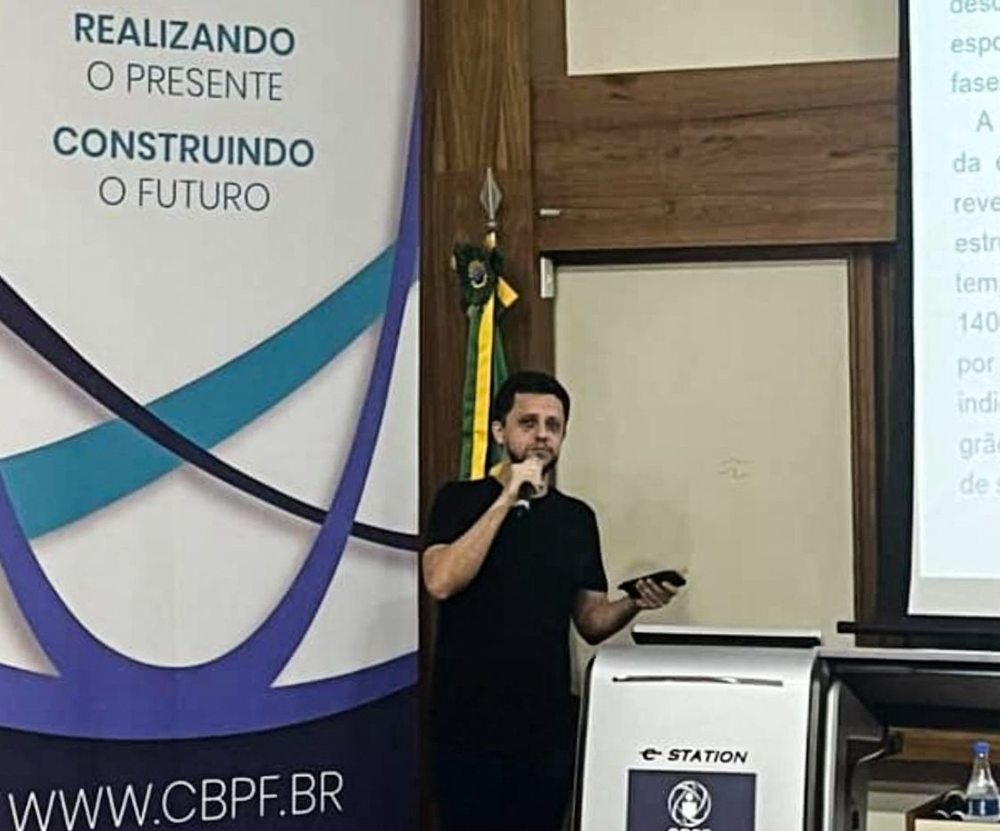

Sobre Mim
Bem-vindo ao meu site! Sou Calazans Macchiutti, Cientista de Dados com Doutorado em Física (CBPF) e sólida formação em modelagem estatística, raciocínio científico e machine learning aplicado.
Atualmente, trabalho como Cientista de Dados na ESPM, onde construo soluções de dados que apoiam a tomada de decisão acadêmica estratégica, incluindo analytics preditivo, desenvolvimento de KPIs, pipelines de automação e dashboards. Gosto de transformar dados complexos e desorganizados em insights claros, métricas confiáveis e produtos escaláveis que melhoram processos reais.
Minha formação acadêmica me deu uma base rigorosa em resolução de problemas, design experimental e análise quantitativa. Com o tempo, transferi essa expertise para trabalhos focados na indústria, aplicando machine learning a séries temporais, detecção de anomalias e previsão de desempenho — sempre visando impacto prático, clareza e resultados mensuráveis.
Áreas de Foco
- Machine Learning & Modelagem Preditiva: classificação, previsão, detecção de anomalias
- Analytics de Séries Temporais: reconhecimento de padrões, monitoramento, indicadores de eficiência
- Ciência de Dados Aplicada: dashboards, frameworks de KPIs, métricas de qualidade de dados
- Automação & Pipelines de Dados: workflows escaláveis para analytics e relatórios
- IA para Suporte à Decisão: insights que melhoram processos e operações
Experiência Profissional
- Cientista de Dados — ESPM (2024–Presente)
- Cientista de Dados Sênior — BINAHKI (2023–2024)
- Pesquisador de Doutorado — CBPF (2020–2024)
Sou especialmente motivado por projetos onde dados podem impulsionar melhores decisões, otimizar recursos e melhorar resultados. Se você está procurando um Cientista de Dados que combina profundidade técnica, forte pensamento analítico e uma mentalidade prática orientada a produtos, fique à vontade para entrar em contato.
Perfil Acadêmico

Pesquisa em Física da Matéria Condensada e Ciência dos Materiais
Foco de Pesquisa
During my doctoral program, I focused my studies on the physical properties of transition metal oxides, with a special emphasis on the investigation of double perovskite-type structures and their impact on the "exchange bias" phenomenon.
My research covers a variety of techniques:
- Magnetic measurements
- Electrical and thermal transport studies
- X-ray diffraction
- Magnetoresistance analysis
- Investigation of strong electronic correlation phenomena
Experiência em Síntese de Materiais
Extensive experience in materials synthesis through various methods:
- Sol-gel synthesis
- Co-precipitation methods
- Solid-state synthesis
- Floating zone techniques
All syntheses included both polycrystals and single crystals of ternary and quaternary rare earth oxides, as well as binary single crystals such as V₂O₅.
Técnicas de Caracterização
- X-ray photoelectron spectroscopy (XPS)
- Raman spectroscopy
- Atomic force microscopy (AFM)
Pesquisa Inicial
- Musical Acoustics and Environmental Acoustics
- Applications of electromagnetic waves in magnetic resonance
- Analysis of sound waves in music
Ver todas as publicações →
Data Science
Resumo Profissional
Minha trajetória foi moldada pelo desenvolvimento e aplicação de modelos estatísticos, com forte foco na identificação de padrões, compreensão de tendências e geração de insights acionáveis.
Desenvolvi uma base sólida em resolução de problemas científicos, modelagem quantitativa e raciocínio analítico rigoroso através de projetos de pesquisa completos. Esta experiência inclui formulação de hipóteses, planejamento experimental, aquisição de dados e interpretação de fenômenos multivariados complexos. Com essa base, apresento abaixo uma visão detalhada da minha trajetória profissional sob uma perspectiva técnica.
Habilidades Técnicas
Programação & Manipulação de Dados
- Python (Pandas, Polars, NumPy)
- SQL para consultas, transformação e gerenciamento de dados
- Dask e PySpark para processamento em larga escala
Visualização de Dados & Análise Estatística
- Matplotlib, Seaborn, Plotly
- SciPy e Statsmodels para modelagem estatística e inferência
Machine Learning & IA
- TensorFlow, Keras, Scikit-learn, XGBoost
- Prophet e Darts para previsão e modelagem de séries temporais
Cloud & Ops
- Docker para containerização e portabilidade
- AWS e Azure para arquiteturas cloud escaláveis
Experiência Profissional
ESPM (Escola Superior de Propaganda e Marketing)
Cientista de Dados | Ago 2024 – Presente
Na ESPM, trabalho na reestruturação do ciclo de vida dos dados em fluxos de extração, carregamento e transformação, além de projetar e manter um conjunto de indicadores de qualidade acadêmica que apoiam a tomada de decisão estratégica e a avaliação pedagógica.
Uma parte importante do meu papel envolve desenvolver e estruturar KPIs relacionados à atração, retenção, progressão e desempenho acadêmico dos alunos ao longo do tempo. Esses indicadores nos permitem monitorar resultados acadêmicos em diferentes canais de admissão e entender como o desempenho dos alunos evolui ao longo do programa.
Paralelamente, ajudo a desenvolver produtos analíticos que apoiam a segmentação e classificação de alunos recém-admitidos, permitindo a identificação precoce daqueles que podem necessitar de reforço acadêmico com base em métricas e indicadores de desempenho previamente definidos.
Além da implementação técnica, contribuo ativamente para o design conceitual das métricas e frameworks usados para mapear todo o ecossistema acadêmico. Isso inclui traduzir objetivos educacionais em indicadores mensuráveis, validar suposições com dados e comunicar resultados aos stakeholders.
Também trabalho em soluções complementares como dashboards que integram outputs de machine learning com metadados acadêmicos, além de ferramentas de automação para operações acadêmicas. Um exemplo é o desenvolvimento de uma plataforma interna de geração de provas, que melhora a eficiência, reduz custos operacionais e fortalece a base de dados necessária para suportar os KPIs construídos para monitoramento institucional.
- Analytics Preditivo: Dashboards de KPIs para taxas de aprovação, retenção e conclusão acadêmica
- Pesquisa Aplicada: Abordagens de ML/IA aplicadas a datasets acadêmicos interdisciplinares
- Produtos de Dados: Soluções analíticas apoiando gestão acadêmica e estratégias de aprendizagem
- Otimização de Processos: Análise de alocação de recursos e melhorias de eficiência operacional
Tech: Python, Power BI, SQL, PySpark, MLflow, Azure
BINAHKI
Cientista de Dados Sênior | Nov 2023 – Ago 2024
Na BINAHKI, trabalhei em produtos de monitoramento inteligente para clientes multinacionais como a ZF Friedrichshafen, usando dados de sensores IoT para monitorar máquinas industriais e otimizar processos de produção.
O projeto principal envolveu o monitoramento de fornos industriais usados na produção de aço através de sinais de tensão elétrica. Os dados dos sensores eram armazenados em um ambiente SQL baseado em nuvem integrado com AWS S3, e o pipeline incluía ingestão de dados, processamento e detecção de ciclos operacionais baseada em modelos.
Usando Python e TensorFlow, treinei modelos de séries temporais para aprender padrões de comportamento normal e identificar eventos-chave como o início e fim de cada lote de produção. Com base nessa detecção em nível de ciclo, construí parâmetros estatísticos de consumo de energia que permitiram a previsão de uso mensal e medição da eficiência de produção.
Além do monitoramento de fornos, soluções IoT similares foram implantadas em outras máquinas industriais com o mesmo objetivo: detecção de anomalias para manutenção preditiva. Esses modelos apoiaram a identificação precoce de comportamento anormal em equipamentos envolvendo bombas, sistemas de torque e carga mecânica.
Além do desenvolvimento de produtos, também contribuí para o design e arquitetura de soluções de ciência de dados para chamadas públicas de inovação. Essas iniciativas resultaram em propostas bem-sucedidas, incluindo um projeto para uma empresa de saneamento focado na correção de registros faltantes e anômalos usando métodos de séries temporais multivariadas e modelos estatísticos como ARIMAX.
Tech: Python, SQL, AWS S3, SageMaker
CBPF (Centro Brasileiro de Pesquisas Físicas)
Cientista | Nov 2017 – Jan 2024
Minha pesquisa de Mestrado focou em combinar investigação sistemática com metodologia laboratorial avançada e interpretação quantitativa de resultados experimentais. Esta experiência fortaleceu minha capacidade de converter medições complexas em conclusões científicas confiáveis.
Durante meu Doutorado, conduzi um estudo de otimização sistemática de propriedades físicas sob condições experimentais controladas. Comparei o mesmo material em múltiplas configurações de processamento e extraí insights de datasets estruturais, microestruturais, eletrônicos e magnéticos. Este trabalho exigiu alto rigor analítico, reprodutibilidade e interpretação cuidadosa de comportamento não-linear, reforçando minha capacidade de investigar sistemas complexos e identificar relações causais em dados.
Este caminho de pesquisa fortaleceu capacidades-chave de Ciência de Dados como pensamento de design experimental, raciocínio estatístico, reconhecimento de padrões, validação crítica e comunicação técnica. Mais importante, reforçou a capacidade de estruturar descobertas em narrativas claras apoiadas por evidências e metodologia consistente.
Publicações
2025
Enhanced oxygen mobility in NiAg alloy catalysts for methane dry reforming
ARG Caranton, AVP Lino, C Macchiutti, NRC Huaman, E Annese
Catalysis Today, 455, 115316 (2025)
DOI
2024
Optimization of the exchange bias effect in La₁.₅Sr₀.₅CoMnO₆
Calazans Macchiutti - Ph.D. Thesis, CBPF (2024)
PDF
Tuning the spontaneous exchange bias effect in La₁.₅Sr₀.₅CoMnO₆
JR Jesus, FB Carneiro, L Bufaiçal, RA Klein, Q Zhang, C Macchiutti
Physical Review Materials, 8(4), 044408 (2024)
DOI
2023
3d and 5d electronic structures in Ba- and Ca-doped double perovskites
JRL Mardegan, LSI Veiga, T Pohlmann, et al., C Macchiutti
Physical Review B, 107(21), 214427 (2023)
DOI
2022
Structural, electronic and magnetic properties of La₁.₅Ca₀.₅(Co₀.₅Fe₀.₅)IrO₆
L Bufaiçal, MAV Heringer, JR Jesus, A Caytuero, C Macchiutti, EM Bittar
J. Magn. Magn. Mater., 556, 169408 (2022)
DOI
2021
Master's Thesis: Synthesis and characterization of single crystals
Calazans Macchiutti - CBPF (2021)
PDF
Absence of zero-field-cooled exchange bias effect in single crystalline compounds
C Macchiutti, JR Jesus, FB Carneiro, L Bufaiçal, M Ciomaga Hatnean
Physical Review Materials, 5(9), 094402 (2021)
DOI
2020
Tuning the spontaneous exchange bias effect with Ba to Sr partial substitution
M Boldrin, AG Silva, LT Coutrim, JR Jesus, C Macchiutti, EM Bittar
Applied Physics Letters, 117(21), 212402 (2020)
DOI
Unveiling charge density wave quantum phase transitions by x-ray diffraction
FB Carneiro, LSI Veiga, JRL Mardegan, R Khan, C Macchiutti, A López
Physical Review B, 101(19), 195135 (2020)
DOI
2019
Zero-field-cooled exchange bias effect in phase-segregated La₂₋ₓAₓCoMnO₆₋δ
LT Coutrim, D Rigitano, C Macchiutti, TJA Mori, R Lora-Serrano
Physical Review B, 100(5), 054428 (2019)
DOI
2017
Física e Música (Physics and Music)
FN Grillo, HE Perez, C Macchiutti - Book, MNPEF (2017)
Co-author of Chapter 3 on physics and music.
PDF
Projetos
Logistic Data Assessment
Analytics suite for tracking delays, seasonality, and predictive risk scoring.
Python
Pandas
LightGBM
FastAPI
Streamlit Applications
Interactive web applications for data visualization and analysis.
Python
Streamlit
Plotly
Voltage Time Series LSTM
LSTM neural network for voltage prediction and anomaly detection.
Python
TensorFlow
LSTM
Magnetism Techniques Thesis
Research code and analysis for magnetism techniques thesis work.
Research
Data Analysis
GitHub
Ver todos os repositórios no GitHub
Logistic Data Assessment
Exploratory and predictive analytics for operational efficiency in logistic networks
Capturas de Tela

Departure Delays

Seasonality

Model Insights
Visão Geral do Projeto
This project consolidates exploratory analysis, KPI monitoring, and predictive modeling for a logistic operation handling thousands of daily deliveries. The objective is to surface actionable insights for dispatch planning, identify systemic bottlenecks, and forecast risk factors that affect service-level agreements.
Key Questions Answered
- What routes, hubs, and shifts are the main contributors to departure delays?
- How do seasonal patterns and workload peaks affect fleet punctuality?
- Which operational variables most influence delay risk according to the predictive models?
Analytical Highlights
- Interactive dashboards covering delay distribution, seasonal effects, and operational KPIs
- Machine learning pipeline (gradient boosting and logistic regression) for delay risk scoring
- Explainability layer with feature importance, SHAP interpretation, and scenario simulation
- Automated data quality checks and anomaly alerts for incoming logistic batches
Workflow
- Data ingestion from transactional systems and IoT telemetry with validation routines
- Feature engineering combining route metadata, fleet schedules, weather, and customer SLAs
- Model training and cross-validation with monitoring for drift and performance decay
- Packaging of results into dashboards and API endpoints for operational teams
Tecnologias
Python
Pandas
Polars
Scikit-learn
LightGBM
Plotly
FastAPI
Results & Impact
The combined analytical assets helped reduce average departure delays by 18% in pilot operations, while the predictive service highlighted upcoming high-risk routes with over 80% precision. Operational teams now rely on the dashboards to reallocate resources earlier and plan contingencies for peak seasons.
Ver no GitHub
← Voltar para Projetos
Streamlit Applications
Interactive web applications built with Streamlit for data visualization and analysis
Capturas de Tela
Visão Geral do Projeto
This project showcases a collection of interactive web applications built using Streamlit, a powerful Python framework for creating data applications. These applications demonstrate various aspects of data science, machine learning, and data visualization.
Funcionalidades
- Interactive data visualization dashboards
- Machine learning model demonstrations
- Real-time data analysis tools
- User-friendly web interfaces
- Responsive design for various screen sizes
Applications Included
Data Visualization Dashboard
Interactive charts and graphs for exploring datasets with various filtering and customization options.
Machine Learning Playground
Hands-on interface for testing different ML algorithms and visualizing their performance.
Statistical Analysis Tool
Comprehensive statistical analysis with automated report generation and visualization.
Tecnologias
Python
Streamlit
Pandas
Plotly
NumPy
Scikit-learn
Como Começar
git clone https://github.com/Calazansmacchiutti/StreamlitApp.git
cd StreamlitApp
pip install -r requirements.txt
streamlit run app.py
Ver no GitHub
← Voltar para Projetos
Voltage Time Series LSTM
LSTM neural network for voltage time series prediction and analysis
Capturas de Tela
Visão Geral do Projeto
This project implements a Long Short-Term Memory (LSTM) neural network for voltage time series prediction and analysis. The model is designed to forecast voltage patterns and detect anomalies in electrical systems using advanced deep learning techniques.
Funcionalidades
- LSTM neural network architecture for time series forecasting
- Voltage pattern recognition and prediction
- Real-time anomaly detection capabilities
- Interactive data visualization and analysis tools
- Model performance evaluation and metrics
- Scalable architecture for different time series lengths
Key Components
Data Preprocessing
Comprehensive data cleaning, normalization, and feature engineering for voltage time series data.
LSTM Model Architecture
Multi-layer LSTM network with dropout regularization and optimized hyperparameters for voltage prediction.
Prediction Analysis
Advanced forecasting capabilities with confidence intervals and performance metrics evaluation.
Visualization Dashboard
Interactive plots showing original vs predicted values, loss curves, and model performance metrics.
Technical Details
Model Architecture
- Multi-layer LSTM with configurable hidden units
- Dropout layers for regularization
- Dense output layer for regression
- Adam optimizer with adaptive learning rate
Data Processing
- Time series windowing for sequence generation
- Min-Max normalization for stable training
- Train/validation/test split with temporal ordering
- Feature scaling and inverse transformation
Tecnologias
Python
TensorFlow
Keras
NumPy
Pandas
Matplotlib
LSTM
Como Começar
git clone https://github.com/Calazansmacchiutti/voltage-times-series-lstm.git
cd voltage-times-series-lstm
pip install -r requirements.txt
python main.py
Ver no GitHub
← Voltar para Projetos
Currículo
Formação
Ph.D. in Physics
CBPF | 2020-2024
"Optimization of the exchange bias effect in La₁.₅Sr₀.₅CoMnO₆"
Master's in Physics
CBPF | 2018-2021
"Synthesis and characterization of single crystals of La₀.₅(Ca,Sr)₀.₅CoMnO₆"
Experiência
Senior Data Scientist - ESPM
Aug 2024 - Present
Predictive modeling, scientific partnerships, AI innovation in education.
Senior Data Scientist - BINAHKI
Nov 2023 - Aug 2024
ML models for industrial applications, smart monitoring, automation pipelines.
Habilidades
Programming
- Python
- R
- SQL
- MATLAB
- FastAPI
- Pandas/Polars
Data Science
- Machine Learning
- Hugging Face
- Statistics
- Causal Inference
- Visualization
- Time Series
Engineering
- System Design
- Project Mgmt
Research
- Condensed Matter
- Materials Science
- X-ray Diffraction
- Magnetism
Links
Lattes
Scholar
ResearchGate
LinkedIn